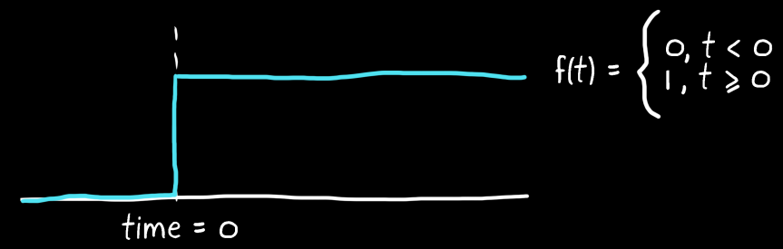
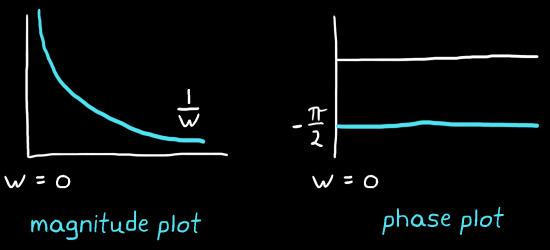

To simplify the convolution of 2 signals in the time domain to a simple multiplication in the frequency domain.
Not all sine waves are easy to represent. If a signal was just a superposition of a few different waves, it would be easy to decompose. Consider a step function that can only be represented by an infinite number of cosines, each at a different frequency and with a different amplitude and phase.

Time domain

Frequency domain
Description
Fourier transform maps a continuous signal in the time domain to its continuous frequency domain representation. The resultant frequency function will return values related to amplitudes and phases.
$$
F(\omega) = \int^\infty_{-\infty}f(t)e^{-j\omega t}dt
$$
The inverse maps from frequency to time.
$$
f(t) = \frac{1}{2\pi}\int^\infty_{-\infty}F(\omega)e^{j\omega t}dw
$$